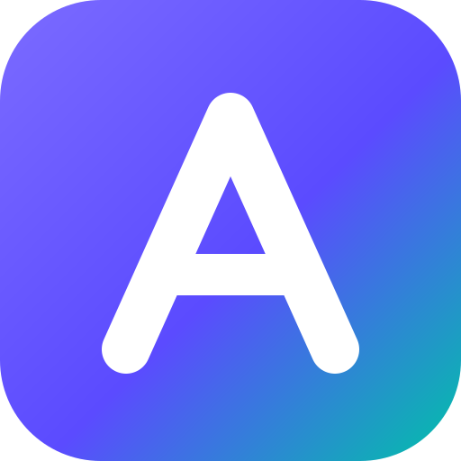
A private, offline-first app that tracks your money, grows your habits and saves you towards the things that matter.
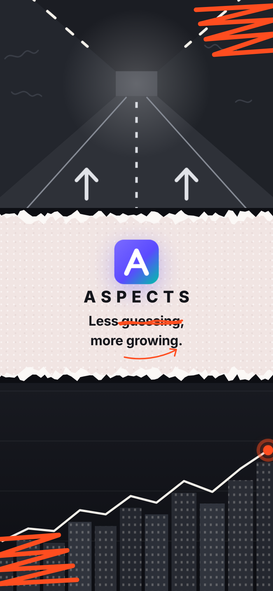
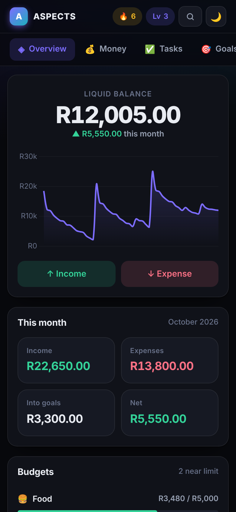
Most budgeting apps only look backwards. ASPECTS pairs a money tracker with small daily goals, so every day you know where you stand and what to do next.
Income and expenses in seconds, with categories, budgets and charts.
Break big plans into micro-tasks you can finish today, and stay focused.
Set targets like a laptop or a trip and watch the progress rings fill.
Open the app and you know where you stand, before you've scrolled.
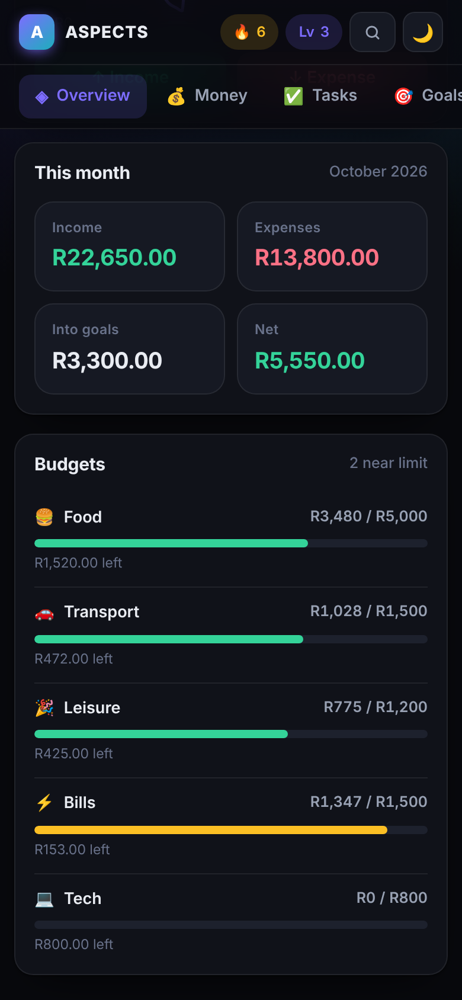
Tap ↑ Income or ↓ Expense, enter the amount, pick a category and confirm. It's saved on the spot, even offline.
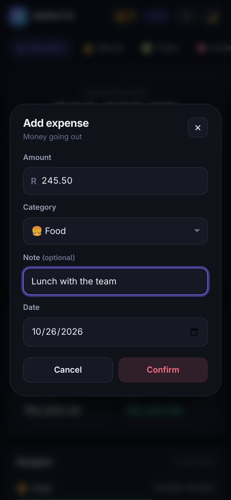
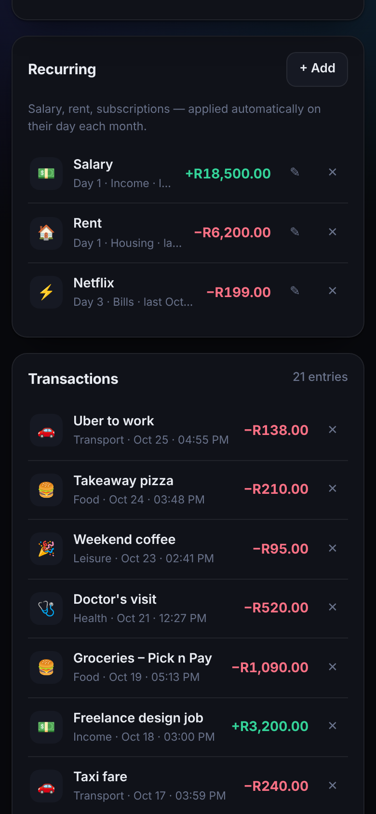
Every month is kept, forever. Go back to October from next year and it's all still there.
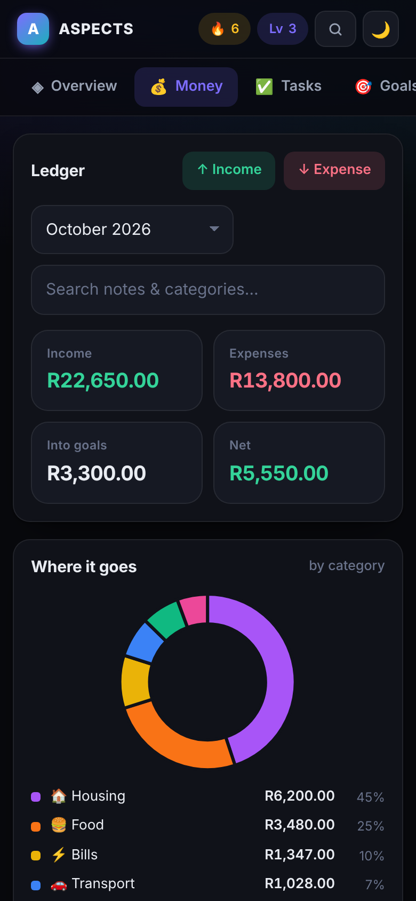
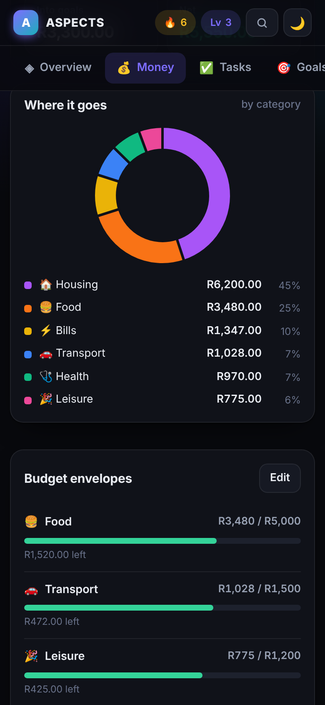
Turn big plans into micro-tasks you can finish today, and build the habit of finishing them.
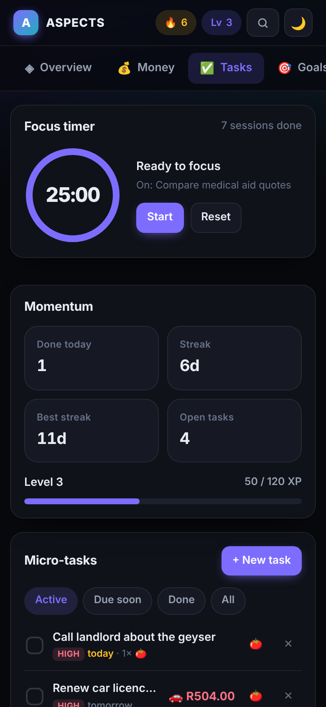
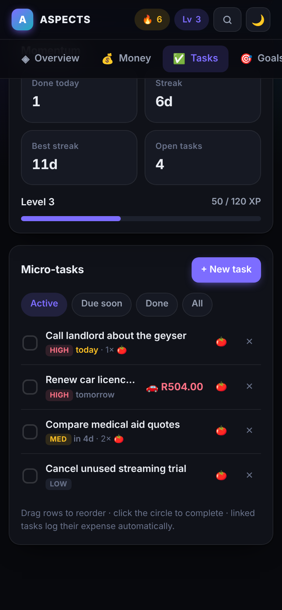
Money you move into a goal leaves your spending balance but stays in your records, so nothing is ever lost.
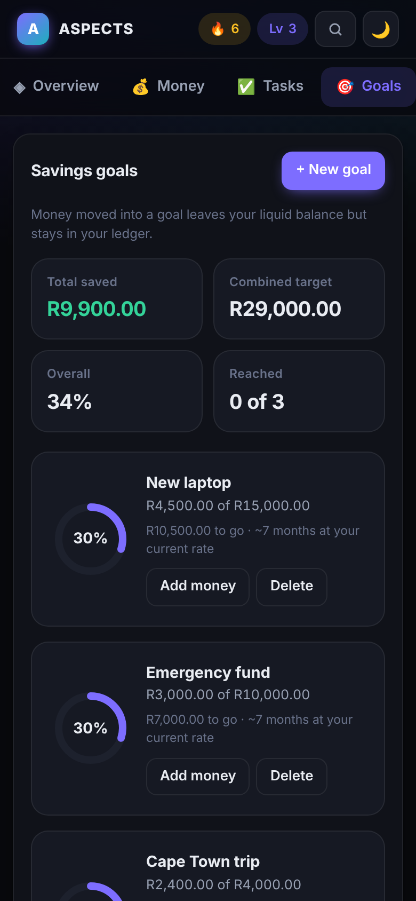
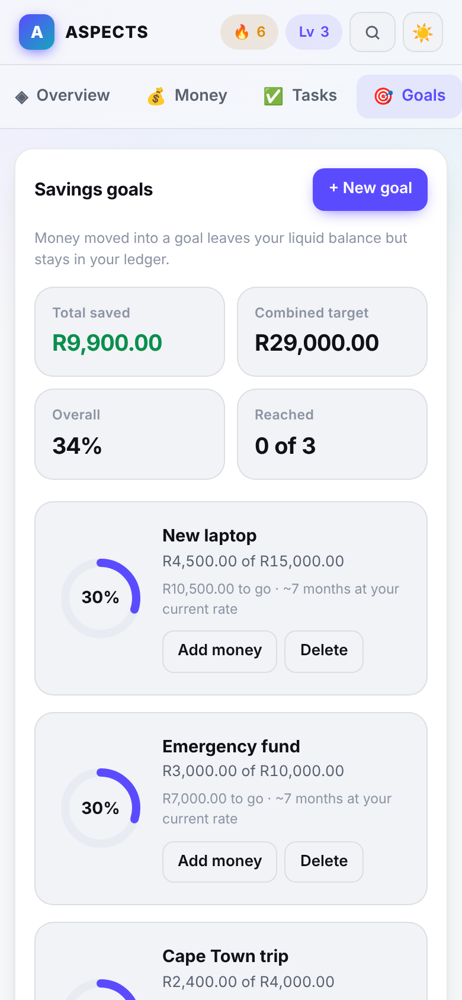
Pick a week or a month and tap Download PDF: a clean statement ready to keep, print or share.
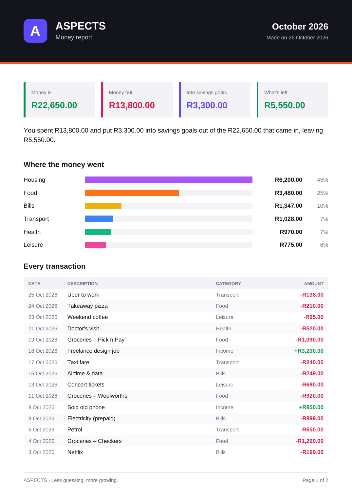
No account and no cloud: your finances live on your phone. Backups are in plain words for everyone.
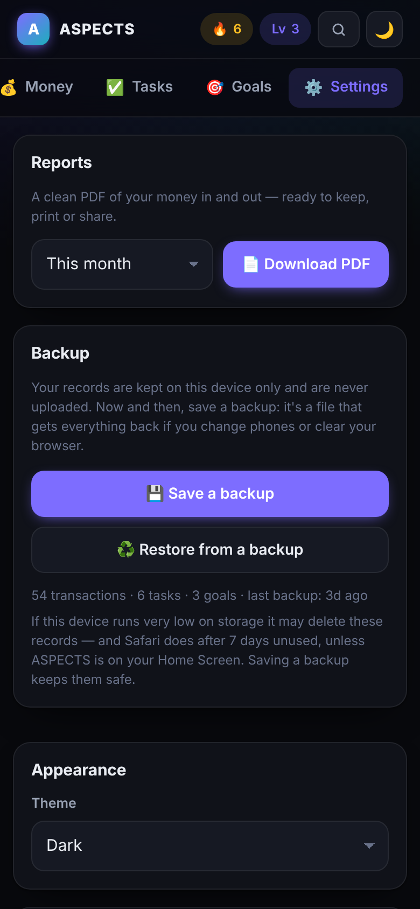
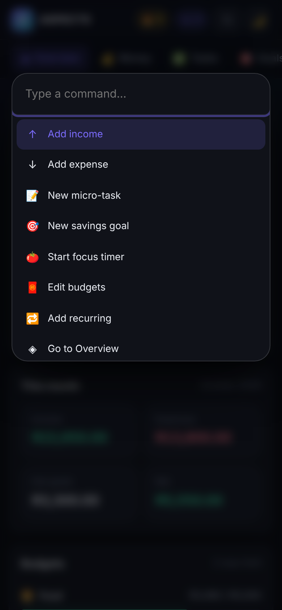
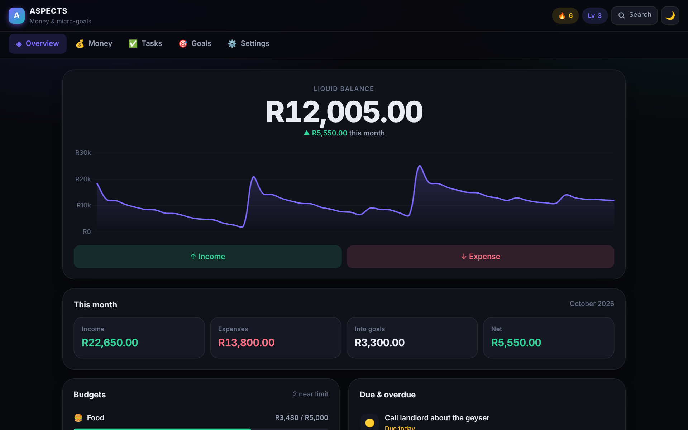
automated checks run before any update reaches users.
browser engines: WebKit (Safari, every iPhone) and Chromium (Chrome, Android).
records lost when the app updates, as tested from the previous version with real data.
on your device: no accounts, no ads, no analytics, no cloud copy of your finances.